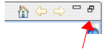
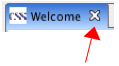

Control System Studio for NSLS-II
Control System Studio for NSLS-II
|
Welcome
You see this introduction when you start Control System Studio (CSS)
for the very first time.
On subsequent use, you can access it via the "Help" menu, subsection
"Welcome".
In case this introduction is "maximized" to fill the whole application
window, use the "Restore" button on the window border so that you can
read while also using CSS for your first steps.
When done, close it by pressing the "X" button
next to the title.
|
The "restore" button:
|

|
|
The "close" button:
|

|
Control System Studio
CSS is a combined effort of several parties, including
DESY (Hamburg, Germany), SNS (Oak Ridge, TN), and others.
It provides a collection of control system tools in a common environment,
based on Eclipse Java technology.
This application is an NSLSII-specific collection of CSS tools.
Getting Started
Some basic follow-along ideas to try as a first-time user:
Probe
- Click on the menu bar item "CSS", select "Diagnostic Tools", followed by
"Probe" to open the CSS Probe tool.
- Enter a PV Name, for example "sim://ai"
(press 'Enter' when done typing the name).
You should see the value of that PV.
- Close Probe via the 'X' in its title bar.
- Re-open Probe via the "CSS" menu as before.
Note that the PV Name entry field has a drop-down box attached to it,
which contains the last few PV names that you entered,
so it's easy to re-inspect previously used PVs.
In case of connection problems or error messages, the network preferences
under the menu "CSS/Preferences...", subsection "CSS Core/EPICS", might
need adjustments.
Workbench
Become familiar with the general CSS workbench behavior.
The Data Browser plot, of which there could be more than one, will
stay in the center of the workbench, while you can arrange the
accessory views like the "Data Browser Config" or the "Probe"
views in various ways around the central area.
Try to move them around by dragging their title bar to a new location.
Note how the cursor shape changes to indicate how the view can be placed.
The arrangement of workbench windows is called a Perspective.
The initial perspective is called "CSS perspective",
as indicated by a label in the upper left screen corner.
The button to the left of the current perspective allows opening other
perspectives.
Use it to open the predefined "Data Browser" perspective, might be useful
for Data Browser related work.
Switch between the two perspectives by clicking on their title tab.
A right-click on their title opens a context menu that allows you to
save the current view layout under a
different name or restore the original layout of a perspective.
Help
Use the "Help/Help Contents" menu to open the help pages,
and read the CSS-Applications related entries.
"Help/Cheat Sheets..." contains step-by-step
instructions for selected tasks. Use the 'triangle'
in the Cheat Sheets view panel to open the drop-down
list of available sheets
At BNL, contact Kunal Shroff, shroffk@bnl.gov for CSS related questions.
Refer to
http://cs-studio.sourceforge.net
for general CSS questions.